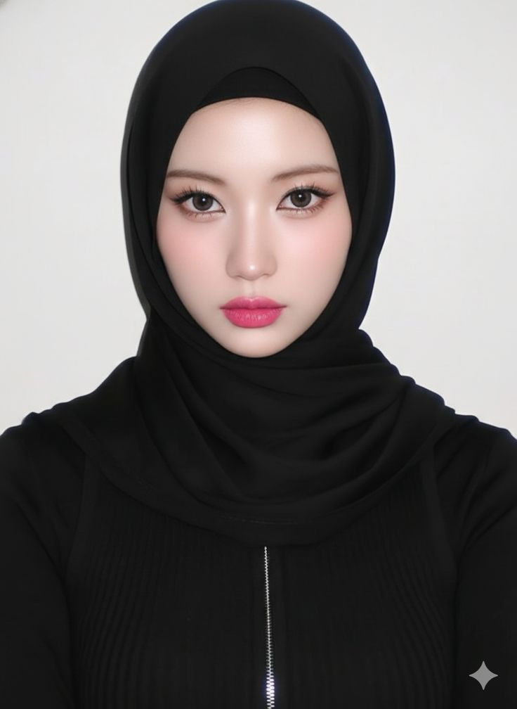

Mahasiswa Teknik Informatika

Saya adalah pribadi yang antusias dalam belajar dan menyukai hal-hal baru, terutama di bidang teknologi. Saya memiliki ketertarikan dalam pengembangan web dan senang mengasah kemampuan coding. Bagi saya, belajar adalah proses yang terus berjalan, dan saya selalu berusaha berkembang menjadi lebih baik setiap harinya.
Nama: ZASKIA BALQIS FITRIANI
Tanggal Lahir: 18 Desember 2006
Alamat: JL. Purwodadi
Jenis Kelamin: Perempuan
Email: zaskiabalqis74@gmail.com
HP: 085364393445
Instagram: @zaskiabalqisff